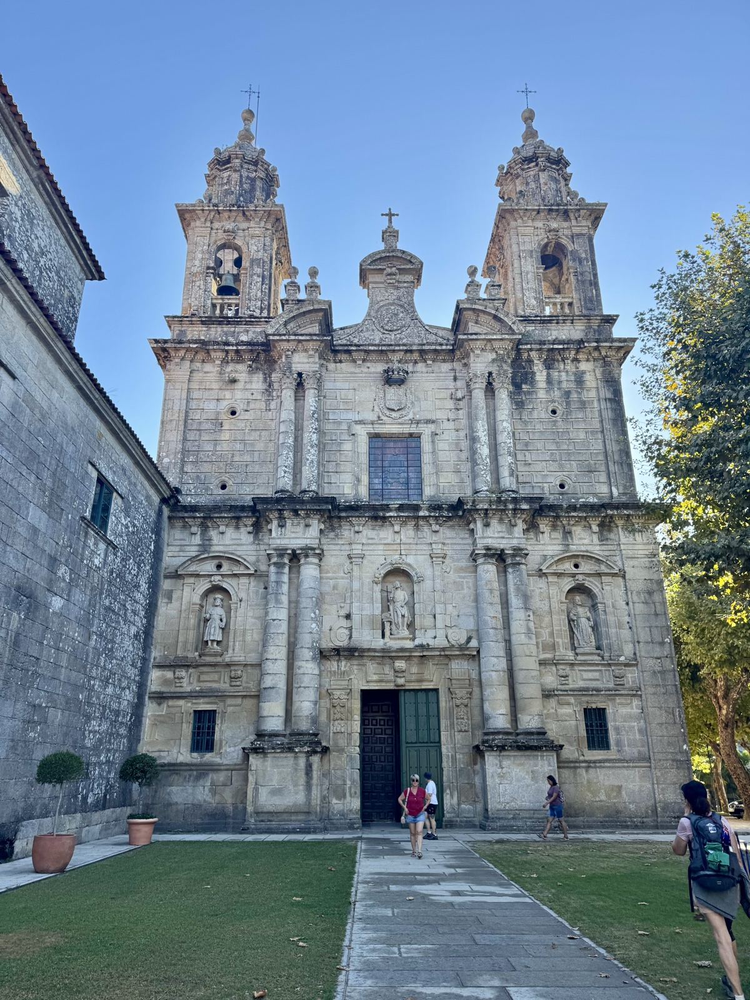
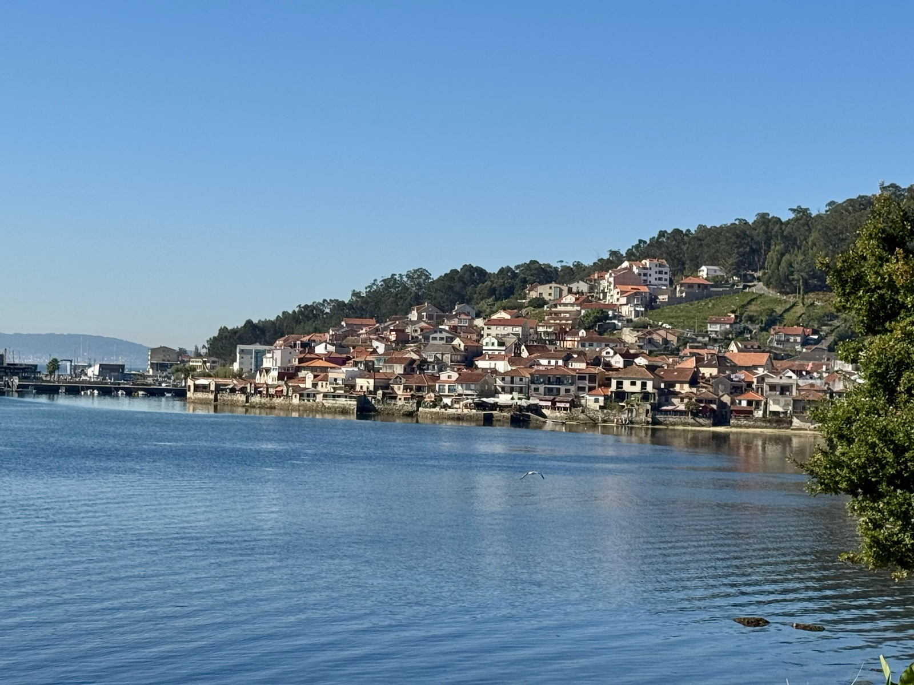
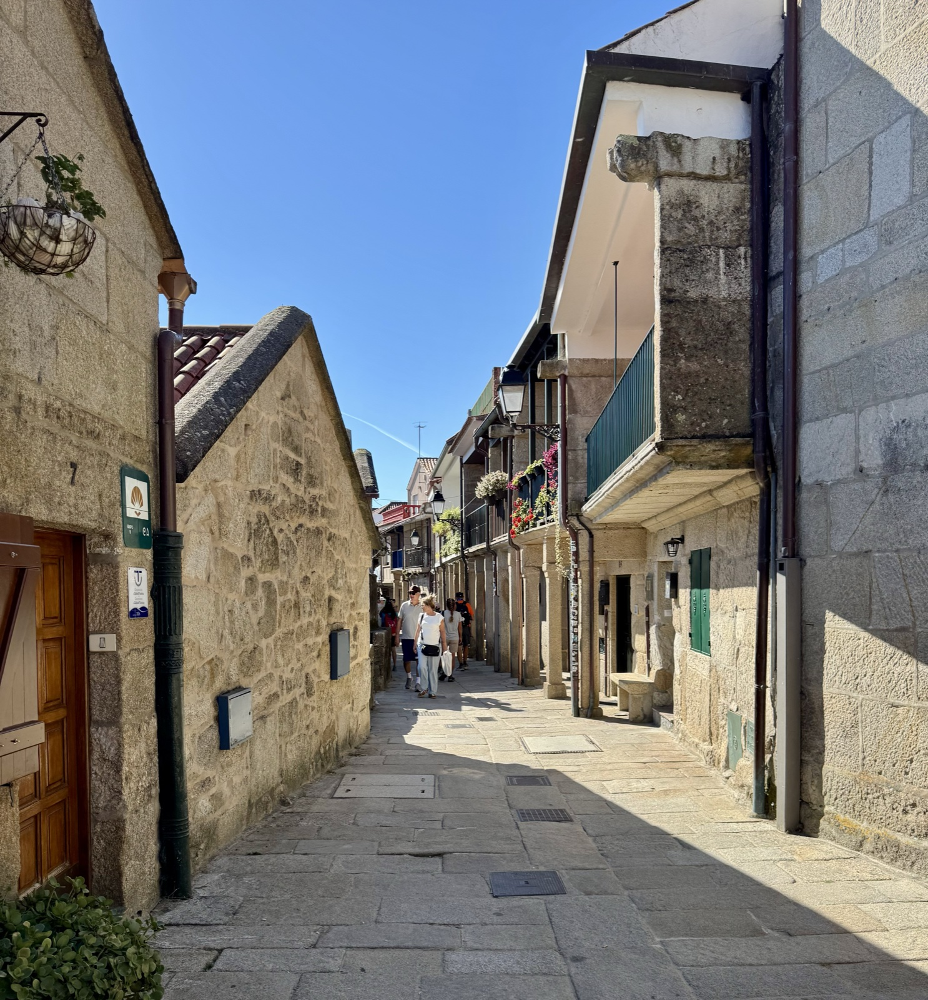
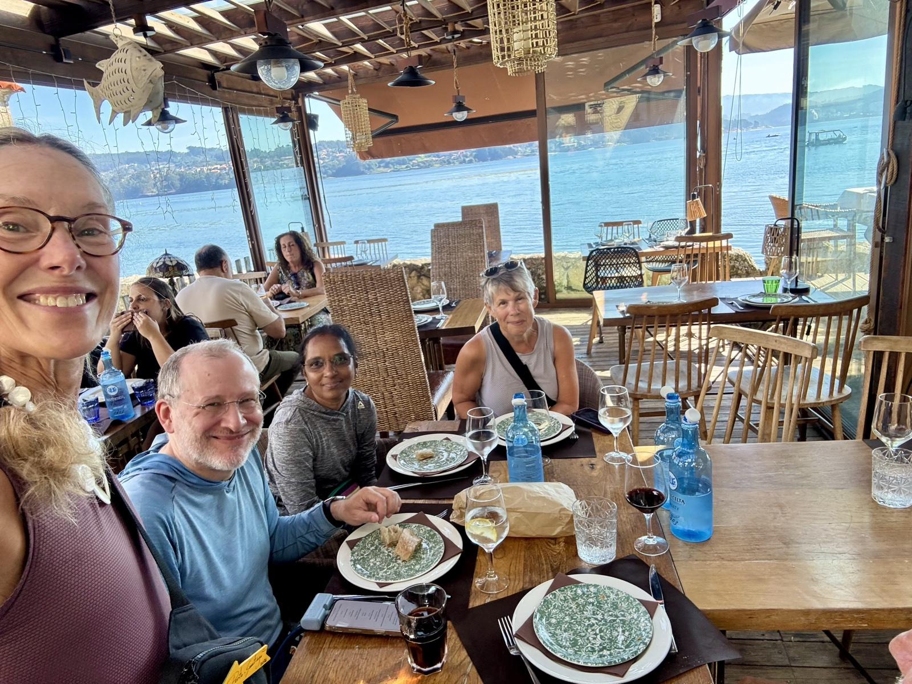
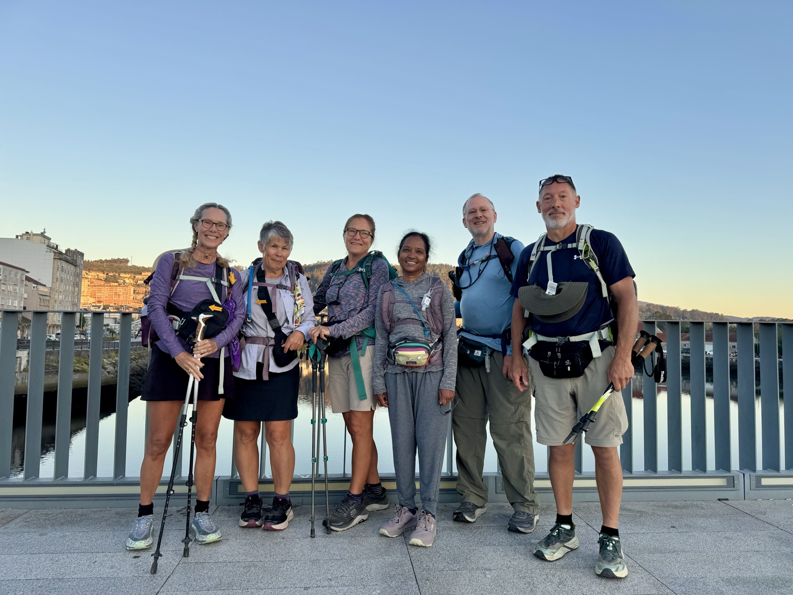

Stage 10: Pontevedra to Combarro
Data: 7.89 miles, 791 elevation gain, 3:03 hours moving time, 3:45 total time.
Today we veered from the traditional route to the spiritual variant route to visit a monastery tucked into the Pontevedra foothills. Dozens of pilgrims have joined the traditional route as we are at the “one week” mileage point in order to reach Santiago. The variant route attracts fewer pilgrims so we enjoyed a more quiet and peaceful walk.

This easy and expeditious rural trail turned into coastal scenes after a brief 7 miles. We enjoyed blue sea, ships, and seabirds. The sun is intense after 1 PM so we were happy to check into our hotel and find lunch in the village.

Combarro is a fishing village with a large marina and fishing vessels. But large and seemingly luxurious homes, hotels, and restaurants create an exceptionally pleasant and inviting place for pilgrims and other vacationers. Homes and eating establishments are tiered along the shore. Stone foundations, walls, and cobbled paths demonstrate Spanish craftsmanship. The food is equally as beautifully assembled. Salt flakes, fresh herbs, and fruity high quality olive oil, in addition to fresh seafood, appear to be among the top ingredients on any menu.

The next couple of days will be tough—very long hikes with a lot of steep elevation. We are resting by the pool after a lunch of corn pie, tomato salad, and alborino. Tonight’s dinner will include a lot of carbs to prepare for increased mileage. I’m feeling quite well as are Claire and the rest of our crew.

But I do feel the shift from a physical challenge to a spiritual awakening—so to speak. My overall feeling of gratefulness is a little overwhelming as I contemplate how it is that I am here, doing this with such wonderful human beings. And how I got to this point involves a lot of physical and emotional preparation. It is not a typical vacation. It is an experience—and I credit my dad for my love and appreciation for the great outdoors, my wife for supporting my “over the top” crazy experiences, my dear friend Claire for being the best hiking buddy ever, and these wonderful pilgrims with whom I’m taking this journey. Deb and Gary’s experience with a prior Camino, Geoff’s navigational expertise, and Parmela’s good cheer and kindness are all essential elements of this amazing trip!
